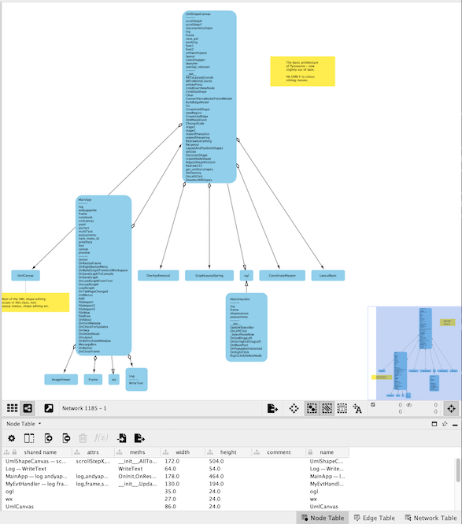

Import one or more python files and they will be reverse engineered and represented as a UML diagram. Layout the diagram as you like and print it to paper or to pdf.
 The Pro version of Pynsource, released in 2019, substitutes a faster graphics engine which allows for zoom, zoom to fit and drag drop line connection between shapes. Please support the Pro version so that more features can be added e.g. undo, advanced Python parsing, UML line annotations etc.
The Pro version of Pynsource, released in 2019, substitutes a faster graphics engine which allows for zoom, zoom to fit and drag drop line connection between shapes. Please support the Pro version so that more features can be added e.g. undo, advanced Python parsing, UML line annotations etc.
Import multiple files by multiple selecting files (hold ctrl and/or shift) in the file open dialog.
You can import repeatedly and incoming classes will be added and wired up to existing classes on the workspace. The positions of existing classes will not be affected by new, incoming UML objects.
The default parsing mode is Python 3 syntax. To switch to Python 2 syntax mode, toggle the menu item "File / Python 3 mode"
Whilst Pynsource is mainly a reverse engineering tool, you can add and delete classes and relationships without reference to any Python code at all. You can use Pynsource as a general UML class diagram editor.
You can delete or change existing association lines, as well as create new ones.
Drag lines directly between UML shapes. E.g. Drag between a shape's white port to any other shape's white port.
Change the line style through the line's r.click menu or shortcuts, like selecting the line and hitting 'R' which reverses the direction of the line.
Drawing lines between classes using shortcut keys is also possible: To draw lines between classes:
Dragging lines directly between UML shapes is a Pro feature.
You can import images but currently, images will not be persisted when you save the diagram.
Images can be resized, and will be printed with your diagram.
If you have a shape selected, zooming will be towards that shape.
Use
Zooming is a Pro feature.
Use
Laying out lots of classes does better with an increased layout spacing, but takes up more room.
This runs layout several times and chooses the layout with least line crossings and the least shape overlaps. After an 'Optimal' Layout, there may be layout variants that you can access by pressing keys 1, 2 ... 8 in decreasing order of layout perfection.
Optimal Layout is a Pro feature.

The 'colour sibling subclasses' feature helps use colour to understand the relationships in your uml diagram.

Hit "Ctrl-J" (or Cmd-J on Mac) to toggle between normal UML and Ascii UML - you can thus copy and paste ascii uml text into your source code!
Hold down ALT as you drag select text fragments to select in "block" mode, which allows you to precisely select single classes or areas of your diagram.
Optionally use Java Ascii Versatile Editor http://www.jave.de to wire up your ascii uml classes nicely before pasting into your source code or documentation.

The PlantUML view renders a UML diagram image using the PlantUML web service which requires an internet connection.
There is a limitation on the size of diagram which this service will render.
There is no ability to select and move shapes. You can however switch to the main UML view, where everthing is editable, then switch back to PlantUML view (the UML image will be re-rendered).
Printing, zooming (pro) and saving of images (pro) are also available whilst in PlantUML view.
If you are having problems generating PlantUML diagrams, view the Pynsource log file using the menu
Help / View Log...
which will show the calls to the
PlantUML urls and importantly, the internet response codes. A response code of 200 means OK.
You can copy and paste the logs to
support
if you would like some help diagnosing the issue.
If you have trouble accessing the internet, or you want faster rendering speed and larger diagrams capacity, consider running your own plantUML server and tell Pynsource to use it. Simply add e.g. the line
PlantUmlServerUrl = http://localhost:8080/plantuml/uml
to your Pynsource config file.
Another example is PlantUmlServerUrl = http://plantuml.dokku.nas/uml
which is the location of my PlantUML server running on my NAS, for example.
The location of your Pynsource config file varies on each operating system.
The exact path to the config file can be found by viewing the log file via the menu Help / View Log...
and look for the entry Pynsource (configobj) config location.
For example on Mac the config file is ~/Library/Preferences/Pynsource/pynsource.ini
install BrewIf you don't have Java installed
brew tap adoptopenjdk/openjdk brew cask install adoptopenjdk8then
brew install maven git clone https://github.com/plantuml/plantuml-server.git cd plantuml-server mvn jetty:run verify by visiting your local page http://localhost:8080/plantuml/ You can specify the port at which it runs: mvn jetty:run -Djetty.port=9999
sudo apt install maven git clone https://github.com/plantuml/plantuml-server.git cd plantuml-server mvn jetty:run
Pynsource now supports exporting your diagrams to XML in the XGMML format. Why would you do this? Its another way to access your UML diagram data in a standardised format. For example you can import the XML into cool apps like Cytoscape which have advanced layout features.
XGMML is an open standard node/edge format - see specification.
Cytoscape is an open source data visualiser with advanced layouts, see https://cytoscape.org/
File/Export Diagram to XML... or right click on the workspace.
File/Import/Network from file....

Example of a Pynsource diagram loaded in Cytoscape.
These limitations are due bugs in the underlying wxPython GUI toolkit on Mac.
 For an exciting new online version of Pynsource which integrates with Github, please visit
GitUML where you can set up a free account. It supports Java and Python.
For an exciting new online version of Pynsource which integrates with Github, please visit
GitUML where you can set up a free account. It supports Java and Python.
True full screen mode on Mac is now enabled for Pro users.
You can pass arguments to Pynsource on the command line, which reverse engineers and generates a diagram from those Python files. For example:
python3 src/pynsource_gui.py FILE1.PY FILE2.PY etc. e.g. python3 src/pynsource_gui.py src/app/cmds/l*.pyIf you are running the binary Pynsource you simply invoke the exe and then the list of Python files you want to reverse engineer. In this way, PRO users can take advantage of this feature. On Mac, the command is a little trickier e.g.
/Applications/pynsource.app/Contents/MacOS/Pynsource FILE1.PY FILE2.PY
Tip: Pynsource currrently assumes that the files to be analysed are Python 3 - this is not yet configurable, but could be changed if you are running from source code: in src/pynsource_gui.py line 379 by passing a 2 instead of a 3.